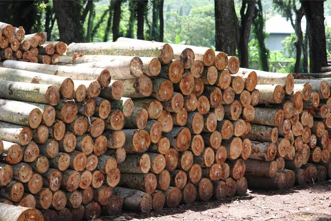
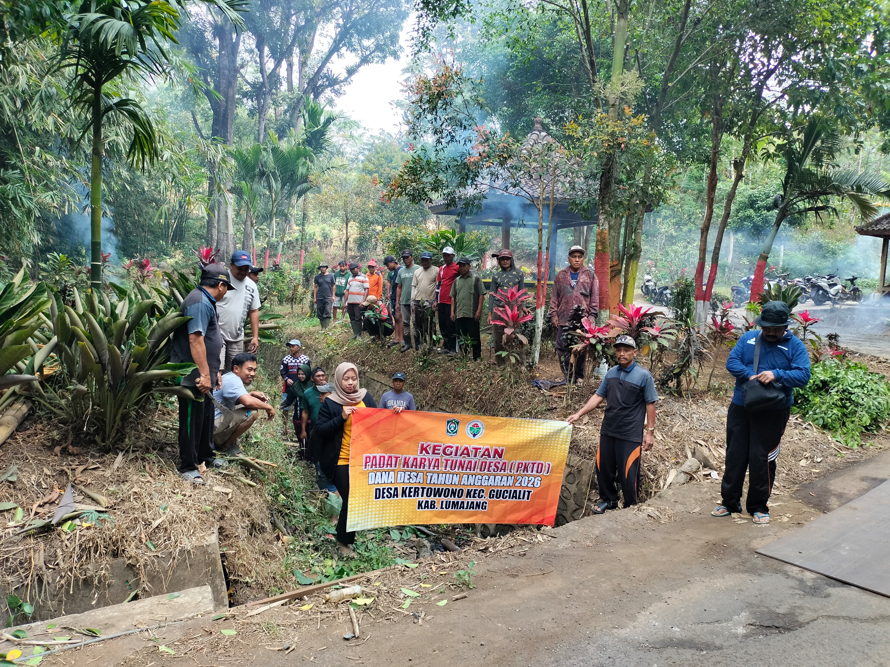
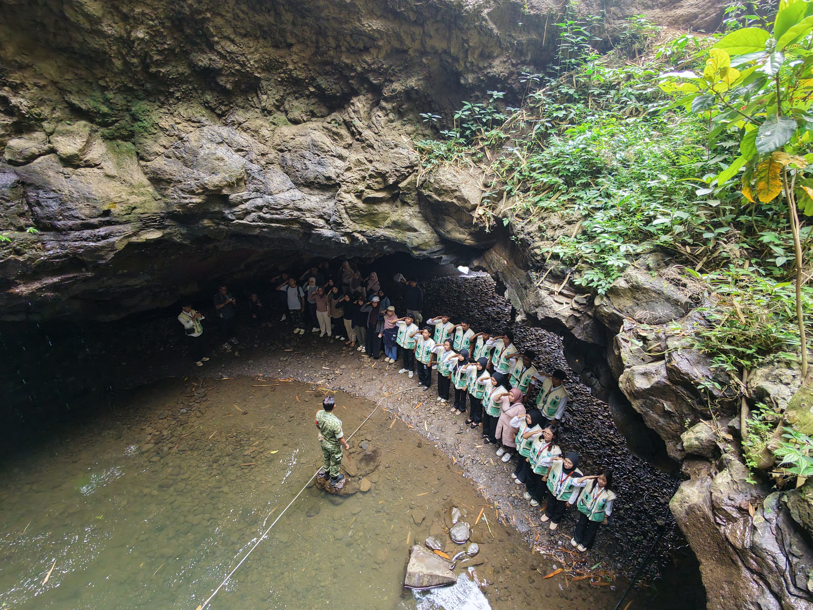
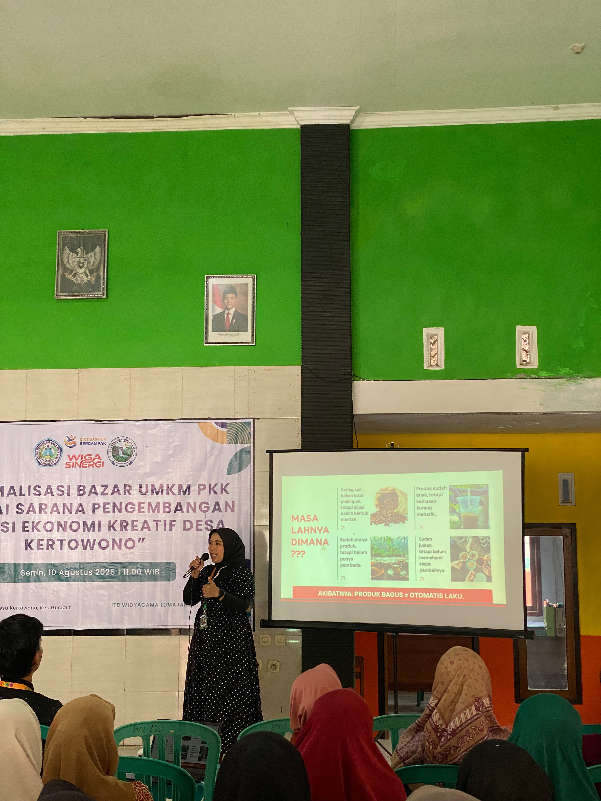
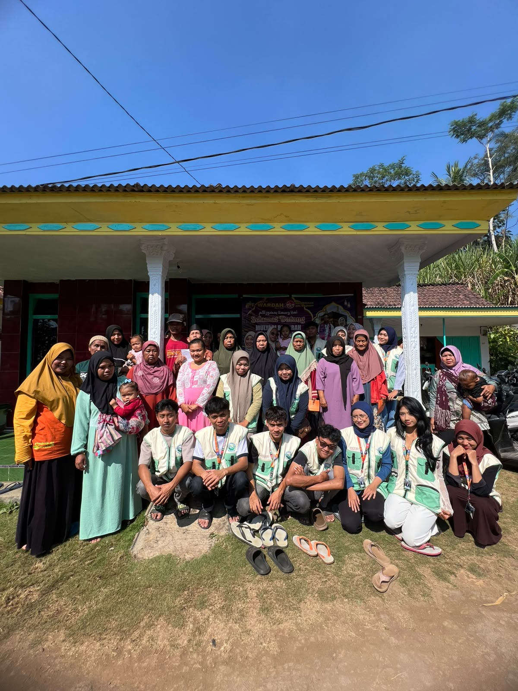

Kabupaten Lumajang • Jawa Timur
Desa Kertowono
Mengenal profil, pemerintahan, sumber daya alam, dan sumber daya manusia Desa Kertowono, Kecamatan Gucialit, Kabupaten Lumajang.
Mengenal profil, pemerintahan, sumber daya alam, dan sumber daya manusia Desa Kertowono, Kecamatan Gucialit, Kabupaten Lumajang.
Desa Kertowono, Kecamatan Gucialit, Kabupaten Lumajang, dengan luas wilayah 1.116 hektare.
Desa Kertowono terletak di Kecamatan Gucialit, Kabupaten Lumajang. Berdasarkan Profil Desa, luas wilayah Desa Kertowono mencapai 1.116 Ha. Kondisi dan potensi desa menjadi bagian penting dalam mendukung pembangunan serta peningkatan kesejahteraan masyarakat.
Arah pembangunan Desa Kertowono menekankan peningkatan partisipasi masyarakat, pemerataan pembangunan, pemberdayaan ekonomi kerakyatan, serta peningkatan kesejahteraan masyarakat desa.
Utara: Desa Tunjung, Kecamatan Gucialit. Timur: Desa Dadapan, Kecamatan Gucialit. Selatan: Desa Gucialit, Kecamatan Gucialit. Barat: Cagar Alam Kabupaten Probolinggo.
Potensi yang tercatat meliputi kayu 265.943 Ha, tebu 312.121 Ha, sapi 1.012 ekor, kambing 20.340 ekor, dan burung merpati 1.275 ekor.
Data pendidikan mencatat 195 murid PAUD, 43 murid TK, 315 murid SD, 679 murid SLTP/MTs, dan 553 murid SLTA/MA.
Arah pembangunan Desa Kertowono berdasarkan Profil Desa Tahun 2020–2028
"Peningkatan partisipasi masyarakat dalam pembangunan, pemerataan pembangunan, pemberdayaan pembangunan dan pemberdayaan ekonomi kerakyatan yang nyata dan berpihak pada rakyat, serta kesejahteraan masyarakat Desa Kertowono."
Arah tersebut ditempatkan sebagai tujuan utama program pembangunan desa dan menjadi dasar perhatian dalam pelaksanaan pembangunan selama masa yang akan datang.
Meningkatkan keamanan dan ketertiban.
Menyelesaikan konflik di masyarakat.
Pemerataan pembangunan.
Penataan kembali birokrasi dan kelembagaan di desa.
Meningkatkan kesejahteraan masyarakat.
Meningkatkan kualitas iman dan taqwa.
Struktur organisasi Pemerintah Desa Kertowono berdasarkan Profil Desa Tahun 2020.
Kaur TU & Umum
Kaur Perencanaan
Kaur Keuangan
Kasi Pemerintahan
Kasi Kesra
Kasi Pelayanan
Kasun S. Mulyo
Kasun S. Makmur
Kasun S. Dadi
Kasun K. Anyar
Potensi sumber daya alam, peternakan, dan sumber daya manusia Desa Kertowono berdasarkan Profil Desa Tahun 2019–2020.
Potensi sumber daya alam Desa Kertowono

Potensi kayu Desa Kertowono tercatat sebesar 265.943 Ha.
Luas Potensi
265.943 Ha
Potensi tanaman tebu Desa Kertowono tercatat sebesar 312.121 Ha.
Populasi hewan ternak yang tercatat
Jumlah hewan berdasarkan data profil desa
Data pendidikan masyarakat Desa Kertowono
PAUD
195
orang
TK
43
orang
SD
315
orang
SLTP / MTs
679
orang
SLTA / MA
553
orang
Jumlah peserta didik pada setiap jenjang pendidikan
Dokumentasi visual kehidupan, alam, dan kegiatan masyarakat Desa Kertowono
Pemandangan Desa

Gotong Royong Masyarakat
Kesenian Tradisional

Antrukan Pawon

Upacara Hut RI Ke-81

Antrukan Pawon
Upacara Adat

Pelatihan UMKM
Antrukan Pawon
Tari Tradisional

Kegiatan Posyandu
Sunset di Desa
Jangan ragu untuk menghubungi kami untuk informasi lebih lanjut tentang Desa Kertowono
Desa Kertowono, Kec. Gucialit, Kab. Lumajang, Jawa Timur 67353
Belum tersedia
Belum tersedia
Belum tersedia